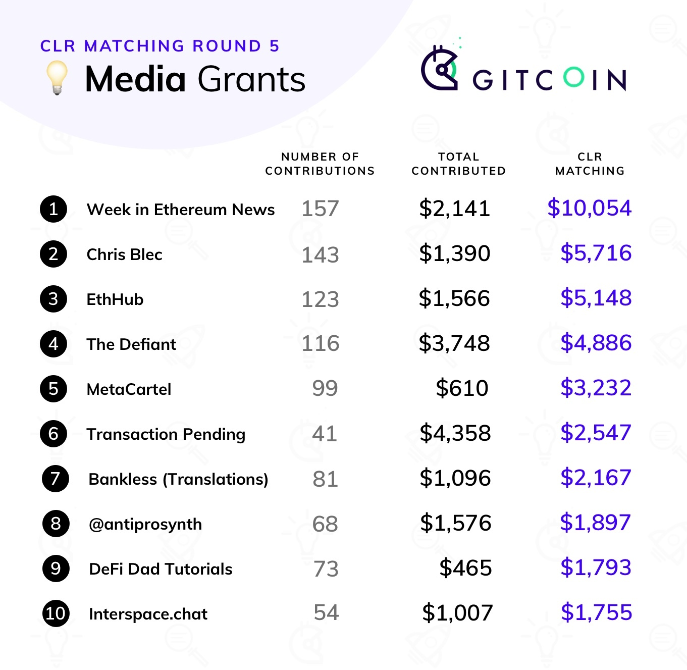
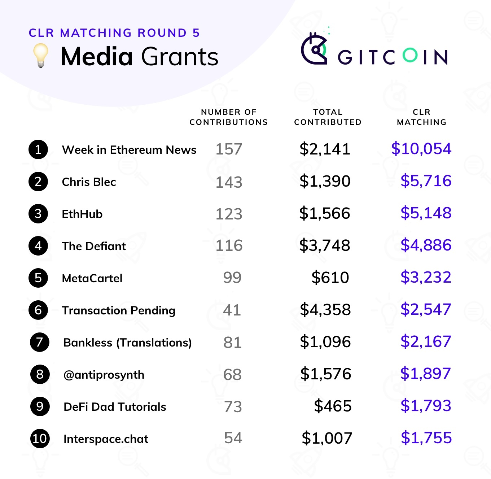
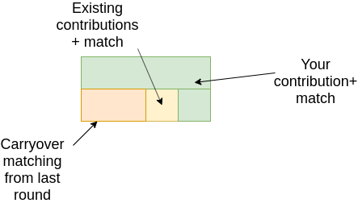
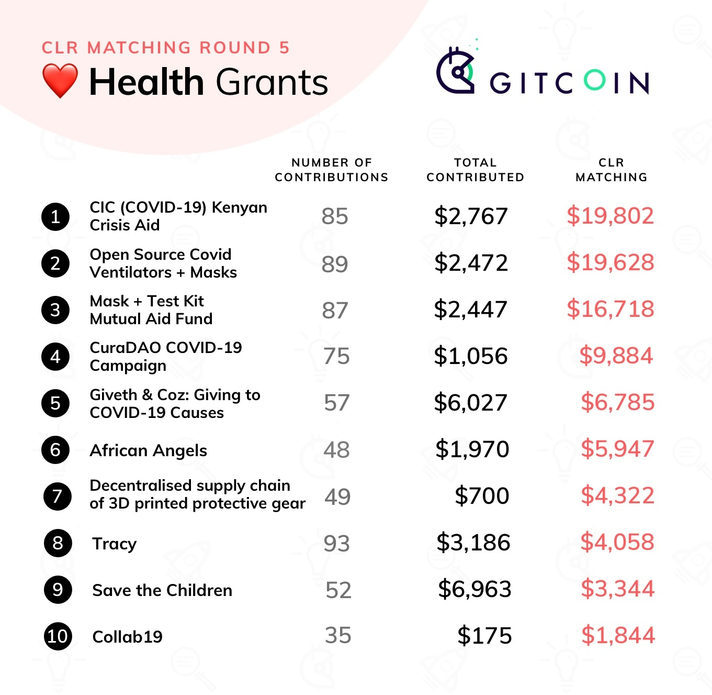

Gitcoin Grants Round 5 Retrospective
2020 Apr 30
See all posts
Gitcoin Grants Round 5 Retrospective
Special thanks to Kevin Owocki and Frank Chen for help and
review
Round 5 of Gitcoin Grants has just finished, with $250,000 of
matching split between tech, media, and the new (non-Ethereum-centric)
category of "public health". In general, it seems like the mechanism and
the community are settling down into a regular rhythm. People know what
it means to contribute, people know what to expect, and the results
emerge in a relatively predictable pattern - even if which specific
grants get the most funds is not so easy to predict.
 

Stability of income
So let's go straight into the analysis. One important property worth
looking at is stability of income across rounds: do projects that do
well in round N also tend to do well in round N+1? Stability of income
is very important if we want to support an ecosystem of "quadratic
freelancers": we want people to feel comfortable relying on their income
knowing that it will not completely disappear the next round. On the
other hand, it would be harmful if some recipients became completely
entrenched, with no opportunity for new projects to come in and compete
for the pot, so there is a need for a balance.
On the media side, we do see some balance between stability and
dynamism:

Week in Ethereum had the highest total amount received in both the previous round and the
current round. EthHub and Bankless are also near the top in both the
current round and the previous round. On the other hand,
Antiprosynthesis, the (beloved? notorious? famous?) Twitter
info-warrior, has decreased from $13,813 to $5,350, while Chris
Blec's YouTube channel has increased from $5,851 to
$12,803. So some churn, but also some continuity between rounds.
On the tech side, we see much more churn in the winners, with a less
clear relationship between income last round and income this round:

Last round, the winner was Tornado Cash, claiming $30,783; this
round, they are down to $8,154. This round, the three roughly-even
winners are Samczsun
($4,631 contributions + $15,704 match = $20,335 total), Arboreum ($16,084
contributions + $9,046 match = $25,128 total) and 1inch.exchange ($58,566
contributions + $7,893 match = $66,459 total), in the latter case the
bulk coming from one contribution:

In the previous round, those three winners were not even in the top
ten, and in some cases not even part of Gitcoin Grants at all.
These numbers show us two things. First, large parts of the Gitcoin
community seem to be in the mindset of treating grants not as a question
of "how much do you deserve for your last two months of work?", but
rather as a one-off reward for years of contributions in the past. This
was one of the strongest rebuttals that I received to my criticism of Antiprosynthesis
receiving $13,813 in the last round: that the people who contributed
to that award did not see it as two months' salary, but rather as a
reward for years of dedication and work for the Ethereum ecosystem. In
the next round, contributors were content that the debt was sufficiently
repaid, and so they moved on to give a similar gift of appreciation and
gratitude to Chris Blec.
That said, not everyone contributes in this way. For example, Prysm
got $7,966 last round and $8,033 this round, and Week in Ethereum is
consistently well-rewarded ($16,727 previous, $12,195 current), and
EthHub saw less stability but still kept half its income ($13,515
previous, $6,705 current) even amid a 20% drop to the matching pool size
as some funds were redirected to public health. So there definitely are
some contributors that are getting almost a reasonable monthly
salary from Gitcoin Grants (yes, even these amounts are all serious
underpayment, but remember that the pool of funds Gitcoin Grants has to
distribute in the first place is quite small, so there's no allocation
that would not seriously underpay most people; the hope is that
in the future we will find ways to make the matching pot grow
bigger).
Why didn't
more people use recurring contributions?
One feature that was tested this round to try to improve stability
was recurring contributions: users could choose to split their
contribution among multiple rounds. However, the feature was not used
often: out of over 8,000 total contributions, only 120 actually made
recurring contributions. I can think of three possible explanations for
this:
- People just don't want to give recurring contributions; they
genuinely prefer to freshly rethink who they are supporting every
round.
- People would be willing to give more recurring contributions, but
there is some kind of "market failure" stopping them; that is, it's
collectively optimal for everyone to give more recurring contributions,
but it's not any individual contributor's interest to be the first to do
so.
- There's some UI inconveniences or other "incidental" obstacles
preventing recurring contributions.
In a recent call with the Gitcoin team, hypothesis (3) was mentioned
frequently. A specific issue was that people were worried about making
recurring contributions because they were concerned whether or not the
money that they lock up for a recurring contribution would be safe.
Improving the payment system and notification workflow may help with
this. Another option is to move away from explicit "streaming" and
instead simply have the UI provide an option for repeating the last
round's contributions and making edits from there.
Hypothesis (1) also should be taken seriously; there's genuine value
in preventing ossification and allowing space for new entrants. But I
want to zoom in particularly on hypothesis (2), the coordination failure
hypothesis.
My explanation of hypothesis (2) starts, interestingly enough, with a
defense of (1): why ossification is genuinely a risk. Suppose that there
are two projects, A and B, and suppose that they are equal quality. But
A already has an established base of contributors; B does not (we'll say
for illustration it only has a few existing contributors). Here's how
much matching you are contributing by participating in each project:
Clearly, you have more impact by supporting A, and so A gets even
more contributors and B gets fewer; the rich get richer. Even if project
B was somewhat better, the greater impact from supporting A
could still create a lock-in that reinforces A's position. The current
everyone-starts-from-zero-in-each-round mechanism greatly limits this
type of entrenchment, because, well, everyone's matching gets reset and
starts from zero.
However, a very similar effect also is the cause behind the market
failure preventing stable recurring contributions, and the
every-round-reset actually exacerbates it. Look at the same
picture above, except instead of thinking of A and B as two
different projects, think of them as the same project in the
current round and in the next round.
We simplify the model as follows. An individual has two choices:
contribute $10 in the current round, or contribute $5 in the current
round and $5 in the next round. If the matchings in the two rounds were
equal, then the latter option would actually be more favorable: because
the matching is proportional to the square root of the donation size,
the former might give you eg. a $200 match now, but the latter would
give you $141 in the current round + $141 in the next round = $282. But
if you see a large mass of people contributing in the current round, and
you expect much fewer people to contribute in the second round, then the
choice is not $200 versus $141 + $141, it might be $200 versus $141 +
$5. And so you're better off joining the current round's frenzy. We can
mathematically analyze the equilibrium:

So there is a substantial region within which the bad equilibrium of
everyone concentrating is sticky: if more than about 3/4 of contributors
are expected to concentrate, it seems in your interest to also
concentrate. A mathematically astute reader may note that there is always some intermediate
strategy that involves splitting but at a ratio different from
50/50, which you can prove performs better than either full
concentrating or the even split, but here we get back to
hypothesis (3) above: the UI doesn't offer such a complex menu of
choices, it just offers the choice of a one-time contribution or a
recurring contribution, so people pick one or the other.
How might we fix this? One option is to add a bit of continuity to
matching ratios: when computing pairwise matches, match against not just
the current round's contributors but, say, 1/3 of the previous round's
contributors as well:

This makes some philosophical sense: the objective of quadratic
funding is to subsidize contributions to projects that are detected to
be public goods because multiple people have contributed to them, and
contributions in the previous round are certainly also evidence of a
project's value, so why not reuse those? So here, moving away from
everyone-starts-from-zero toward this partial carryover of matching
ratios would mitigate the round concentration effect - but, of course,
it would exacerbate the risk of entrenchment. Hence, some
experimentation and balance may be in order. A broader philosophical
question is, is there really a deep inherent tradeoff between risk of
entrenchment and stability of income, or is there some way we could get
both?
Responses to negative
contributions
This round also introduced negative contributions, a feature proposed
in my review of the previous
round. But as with recurring contributions, very few people made
negative contributions, to the point where their impact on the results
was negligible. Also, there was active
opposition
to negative
contributions:

Source:
honestly I have no idea, someone else sent it to me and they forgot
where they found it. Sorry :(
The main source of opposition was basically what I predicted in the
previous round. Adding a mechanism that allows people to penalize
others, even if deservedly so, can have tricky and easily harmful social
consequences. Some people even opposed the negative contribution
mechanism to the point where they took care to give positive
contributions to everyone who received a negative contribution.
How do we respond? To me it seems clear that, in the long run,
some mechanism of filtering out bad projects, and ideally
compensating for overexcitement into good projects, will have to exist.
It doesn't necessarily need to be integrated as a symmetric part of the
QF, but there does need to be a filter of some form. And this mechanism,
whatever form it will take, invariably opens up the possibility of the
same social dynamics. So there is a challenge that will have to be
solved no matter how we do it.
One approach would be to hide more information: instead of just
hiding who made a negative contribution, outright hide the fact
that a negative contribution was made. Many opponents of negative
contributions explicitly indicated that they would be okay (or at least
more okay) with such a model. And indeed (see the next section), this is
a direction we will have to go anyway. But it would come at a cost -
effectively hiding negative contributions would mean not giving as much
real-time feedback into what projects got how much funds.
Stepping up the fight
against collusion
This round saw much larger-scale attempts at collusion:

It does seem clear that, at current scales, stronger protections
against manipulation are goingto be required. The first thing that can
be done is adding a stronger identity verification layer than Github
accounts; this is something that the Gitcoin team is already working on.
There is definitely a complex tradeoff between security and
inclusiveness to be worked through, but it is not especially difficult
to implement a first version. And if the identity problem is solved to a
reasonable extent, that will likely be enough to prevent collusion at
current scales. But in the longer term, we are going to need protection
not just against manipulating the system by making many fake accounts,
but also against collusion via bribes (explicit and implicit).
MACI
is the solution that I proposed (and Barry Whitehat and co are
implementing) to solve this problem. Essentially, MACI is a
cryptographic construction that allows for contributions to projects to
happen on-chain in a privacy-preserving, encrypted form, that allows
anyone to cryptographically verify that the mechanism is being
implemented correctly, but prevents participants from being
able to prove to a third party that they made any particular
contribution. Unprovability means that if someone tries to bribe others
to contribute to their project, the bribe recipients would have no way
to prove that they actually contributed to that project, making the
bribe unenforceable. Benign "collusion" in the form of friends and
family supporting each other would still happen, as people would not
easily lie to each other at such small scales, but any broader collusion
would be very difficult to maintain.
However, we do need to think through some of the second-order
consequences that integrating MACI would introduce. The biggest
blessing, and curse, of using MACI is that contributions become hidden.
Identities necessarily become hidden, but even the exact timing of
contributions would need to be hidden to prevent deanonymization through
timing (to prove that you contributed, make the total amount
jump up between 17:40 and 17:42 today). Instead, for example, totals
could be provided and updated once per day. Note that as a corollary
negative contributions would be hidden as well; they would only appear
if they exceeded all positive contributions for an entire day (and if
even that is not desired then the mechanism for when balances are
updated could be tweaked to further hide downward changes).
The challenge with hiding contributions is that we lose the "social
proof" motivator for contributing: if contributions are unprovable you
can't as easily publicly brag about a contribution you made. My best
proposal for solving this is for the mechanism to publish one extra
number: the total amount that a particular participant
contributed (counting only projects that have received at least 10
contributors to prevent inflating one's number by self-dealing).
Individuals would then have a generic "proof-of-generosity" that they
contributed some specific total amount, and could publicly
state (without proof) what projects it was that they supported. But this
is all a significant change to the user experience that will require
multiple rounds of experimentation to get right.
Conclusions
All in all, Gitcoin Grants is establishing itself as a significant
pillar of the Ethereum ecosystem that more and more projects are relying
on for some or all of their support. While it has a relatively low
amount of funding at present, and so inevitably underfunds almost
everything it touches, we hope that over time we'll continue to see
larger sources of funding for the matching pools appear. One option is
MEV
auctions, another is that new or existing token projects looking to
do airdrops could provide the tokens to a matching pool. A third is
transaction fees of various applications. With larger amounts of
funding, Gitcoin Grants could serve as a more significant funding stream
- though to get to that point, further iteration and work on fine-tuning
the mechanism will be required.

Additionally, this round saw Gitcoin Grants' first foray into
applications beyond Ethereum with the health section. There is growing
interest in quadratic funding from local government bodies and other
non-blockchain groups, and it would be very valuable to see quadratic
funding more broadly deployed in such contexts. That said, there are
unique challenges there too. First, there's issues around onboarding
people who do not already have cryptocurrency. Second, the Ethereum
community is naturally expert in the needs of the Ethereum community,
but neither it nor average people are expert in, eg. medical support for
the coronavirus pandemic. We should expect quadratic funding to perform
worse when the participants are not experts in the domain they're being
asked to contribute to. Will non-blockchain uses of QF focus on domains
where there's a clear local community that's expert in its own needs, or
will people try larger-scale deployments soon? If we do see larger-scale
deployments, how will those turn out? There's still a lot of questions
to be answered.
Gitcoin Grants Round 5 Retrospective
2020 Apr 30 See all postsSpecial thanks to Kevin Owocki and Frank Chen for help and review
Round 5 of Gitcoin Grants has just finished, with $250,000 of matching split between tech, media, and the new (non-Ethereum-centric) category of "public health". In general, it seems like the mechanism and the community are settling down into a regular rhythm. People know what it means to contribute, people know what to expect, and the results emerge in a relatively predictable pattern - even if which specific grants get the most funds is not so easy to predict.
Stability of income
So let's go straight into the analysis. One important property worth looking at is stability of income across rounds: do projects that do well in round N also tend to do well in round N+1? Stability of income is very important if we want to support an ecosystem of "quadratic freelancers": we want people to feel comfortable relying on their income knowing that it will not completely disappear the next round. On the other hand, it would be harmful if some recipients became completely entrenched, with no opportunity for new projects to come in and compete for the pot, so there is a need for a balance.
On the media side, we do see some balance between stability and dynamism:
Week in Ethereum had the highest total amount received in both the previous round and the current round. EthHub and Bankless are also near the top in both the current round and the previous round. On the other hand, Antiprosynthesis, the (beloved? notorious? famous?) Twitter info-warrior, has decreased from $13,813 to $5,350, while Chris Blec's YouTube channel has increased from $5,851 to $12,803. So some churn, but also some continuity between rounds.
On the tech side, we see much more churn in the winners, with a less clear relationship between income last round and income this round:
Last round, the winner was Tornado Cash, claiming $30,783; this round, they are down to $8,154. This round, the three roughly-even winners are Samczsun ($4,631 contributions + $15,704 match = $20,335 total), Arboreum ($16,084 contributions + $9,046 match = $25,128 total) and 1inch.exchange ($58,566 contributions + $7,893 match = $66,459 total), in the latter case the bulk coming from one contribution:
In the previous round, those three winners were not even in the top ten, and in some cases not even part of Gitcoin Grants at all.
These numbers show us two things. First, large parts of the Gitcoin community seem to be in the mindset of treating grants not as a question of "how much do you deserve for your last two months of work?", but rather as a one-off reward for years of contributions in the past. This was one of the strongest rebuttals that I received to my criticism of Antiprosynthesis receiving $13,813 in the last round: that the people who contributed to that award did not see it as two months' salary, but rather as a reward for years of dedication and work for the Ethereum ecosystem. In the next round, contributors were content that the debt was sufficiently repaid, and so they moved on to give a similar gift of appreciation and gratitude to Chris Blec.
That said, not everyone contributes in this way. For example, Prysm got $7,966 last round and $8,033 this round, and Week in Ethereum is consistently well-rewarded ($16,727 previous, $12,195 current), and EthHub saw less stability but still kept half its income ($13,515 previous, $6,705 current) even amid a 20% drop to the matching pool size as some funds were redirected to public health. So there definitely are some contributors that are getting almost a reasonable monthly salary from Gitcoin Grants (yes, even these amounts are all serious underpayment, but remember that the pool of funds Gitcoin Grants has to distribute in the first place is quite small, so there's no allocation that would not seriously underpay most people; the hope is that in the future we will find ways to make the matching pot grow bigger).
Why didn't more people use recurring contributions?
One feature that was tested this round to try to improve stability was recurring contributions: users could choose to split their contribution among multiple rounds. However, the feature was not used often: out of over 8,000 total contributions, only 120 actually made recurring contributions. I can think of three possible explanations for this:
In a recent call with the Gitcoin team, hypothesis (3) was mentioned frequently. A specific issue was that people were worried about making recurring contributions because they were concerned whether or not the money that they lock up for a recurring contribution would be safe. Improving the payment system and notification workflow may help with this. Another option is to move away from explicit "streaming" and instead simply have the UI provide an option for repeating the last round's contributions and making edits from there.
Hypothesis (1) also should be taken seriously; there's genuine value in preventing ossification and allowing space for new entrants. But I want to zoom in particularly on hypothesis (2), the coordination failure hypothesis.
My explanation of hypothesis (2) starts, interestingly enough, with a defense of (1): why ossification is genuinely a risk. Suppose that there are two projects, A and B, and suppose that they are equal quality. But A already has an established base of contributors; B does not (we'll say for illustration it only has a few existing contributors). Here's how much matching you are contributing by participating in each project:
Clearly, you have more impact by supporting A, and so A gets even more contributors and B gets fewer; the rich get richer. Even if project B was somewhat better, the greater impact from supporting A could still create a lock-in that reinforces A's position. The current everyone-starts-from-zero-in-each-round mechanism greatly limits this type of entrenchment, because, well, everyone's matching gets reset and starts from zero.
However, a very similar effect also is the cause behind the market failure preventing stable recurring contributions, and the every-round-reset actually exacerbates it. Look at the same picture above, except instead of thinking of A and B as two different projects, think of them as the same project in the current round and in the next round.
We simplify the model as follows. An individual has two choices: contribute $10 in the current round, or contribute $5 in the current round and $5 in the next round. If the matchings in the two rounds were equal, then the latter option would actually be more favorable: because the matching is proportional to the square root of the donation size, the former might give you eg. a $200 match now, but the latter would give you $141 in the current round + $141 in the next round = $282. But if you see a large mass of people contributing in the current round, and you expect much fewer people to contribute in the second round, then the choice is not $200 versus $141 + $141, it might be $200 versus $141 + $5. And so you're better off joining the current round's frenzy. We can mathematically analyze the equilibrium:
So there is a substantial region within which the bad equilibrium of everyone concentrating is sticky: if more than about 3/4 of contributors are expected to concentrate, it seems in your interest to also concentrate. A mathematically astute reader may note that there is always some intermediate strategy that involves splitting but at a ratio different from 50/50, which you can prove performs better than either full concentrating or the even split, but here we get back to hypothesis (3) above: the UI doesn't offer such a complex menu of choices, it just offers the choice of a one-time contribution or a recurring contribution, so people pick one or the other.
How might we fix this? One option is to add a bit of continuity to matching ratios: when computing pairwise matches, match against not just the current round's contributors but, say, 1/3 of the previous round's contributors as well:
This makes some philosophical sense: the objective of quadratic funding is to subsidize contributions to projects that are detected to be public goods because multiple people have contributed to them, and contributions in the previous round are certainly also evidence of a project's value, so why not reuse those? So here, moving away from everyone-starts-from-zero toward this partial carryover of matching ratios would mitigate the round concentration effect - but, of course, it would exacerbate the risk of entrenchment. Hence, some experimentation and balance may be in order. A broader philosophical question is, is there really a deep inherent tradeoff between risk of entrenchment and stability of income, or is there some way we could get both?
Responses to negative contributions
This round also introduced negative contributions, a feature proposed in my review of the previous round. But as with recurring contributions, very few people made negative contributions, to the point where their impact on the results was negligible. Also, there was active opposition to negative contributions:
Source: honestly I have no idea, someone else sent it to me and they forgot where they found it. Sorry :(
The main source of opposition was basically what I predicted in the previous round. Adding a mechanism that allows people to penalize others, even if deservedly so, can have tricky and easily harmful social consequences. Some people even opposed the negative contribution mechanism to the point where they took care to give positive contributions to everyone who received a negative contribution.
How do we respond? To me it seems clear that, in the long run, some mechanism of filtering out bad projects, and ideally compensating for overexcitement into good projects, will have to exist. It doesn't necessarily need to be integrated as a symmetric part of the QF, but there does need to be a filter of some form. And this mechanism, whatever form it will take, invariably opens up the possibility of the same social dynamics. So there is a challenge that will have to be solved no matter how we do it.
One approach would be to hide more information: instead of just hiding who made a negative contribution, outright hide the fact that a negative contribution was made. Many opponents of negative contributions explicitly indicated that they would be okay (or at least more okay) with such a model. And indeed (see the next section), this is a direction we will have to go anyway. But it would come at a cost - effectively hiding negative contributions would mean not giving as much real-time feedback into what projects got how much funds.
Stepping up the fight against collusion
This round saw much larger-scale attempts at collusion:
It does seem clear that, at current scales, stronger protections against manipulation are goingto be required. The first thing that can be done is adding a stronger identity verification layer than Github accounts; this is something that the Gitcoin team is already working on. There is definitely a complex tradeoff between security and inclusiveness to be worked through, but it is not especially difficult to implement a first version. And if the identity problem is solved to a reasonable extent, that will likely be enough to prevent collusion at current scales. But in the longer term, we are going to need protection not just against manipulating the system by making many fake accounts, but also against collusion via bribes (explicit and implicit).
MACI is the solution that I proposed (and Barry Whitehat and co are implementing) to solve this problem. Essentially, MACI is a cryptographic construction that allows for contributions to projects to happen on-chain in a privacy-preserving, encrypted form, that allows anyone to cryptographically verify that the mechanism is being implemented correctly, but prevents participants from being able to prove to a third party that they made any particular contribution. Unprovability means that if someone tries to bribe others to contribute to their project, the bribe recipients would have no way to prove that they actually contributed to that project, making the bribe unenforceable. Benign "collusion" in the form of friends and family supporting each other would still happen, as people would not easily lie to each other at such small scales, but any broader collusion would be very difficult to maintain.
However, we do need to think through some of the second-order consequences that integrating MACI would introduce. The biggest blessing, and curse, of using MACI is that contributions become hidden. Identities necessarily become hidden, but even the exact timing of contributions would need to be hidden to prevent deanonymization through timing (to prove that you contributed, make the total amount jump up between 17:40 and 17:42 today). Instead, for example, totals could be provided and updated once per day. Note that as a corollary negative contributions would be hidden as well; they would only appear if they exceeded all positive contributions for an entire day (and if even that is not desired then the mechanism for when balances are updated could be tweaked to further hide downward changes).
The challenge with hiding contributions is that we lose the "social proof" motivator for contributing: if contributions are unprovable you can't as easily publicly brag about a contribution you made. My best proposal for solving this is for the mechanism to publish one extra number: the total amount that a particular participant contributed (counting only projects that have received at least 10 contributors to prevent inflating one's number by self-dealing). Individuals would then have a generic "proof-of-generosity" that they contributed some specific total amount, and could publicly state (without proof) what projects it was that they supported. But this is all a significant change to the user experience that will require multiple rounds of experimentation to get right.
Conclusions
All in all, Gitcoin Grants is establishing itself as a significant pillar of the Ethereum ecosystem that more and more projects are relying on for some or all of their support. While it has a relatively low amount of funding at present, and so inevitably underfunds almost everything it touches, we hope that over time we'll continue to see larger sources of funding for the matching pools appear. One option is MEV auctions, another is that new or existing token projects looking to do airdrops could provide the tokens to a matching pool. A third is transaction fees of various applications. With larger amounts of funding, Gitcoin Grants could serve as a more significant funding stream - though to get to that point, further iteration and work on fine-tuning the mechanism will be required.
Additionally, this round saw Gitcoin Grants' first foray into applications beyond Ethereum with the health section. There is growing interest in quadratic funding from local government bodies and other non-blockchain groups, and it would be very valuable to see quadratic funding more broadly deployed in such contexts. That said, there are unique challenges there too. First, there's issues around onboarding people who do not already have cryptocurrency. Second, the Ethereum community is naturally expert in the needs of the Ethereum community, but neither it nor average people are expert in, eg. medical support for the coronavirus pandemic. We should expect quadratic funding to perform worse when the participants are not experts in the domain they're being asked to contribute to. Will non-blockchain uses of QF focus on domains where there's a clear local community that's expert in its own needs, or will people try larger-scale deployments soon? If we do see larger-scale deployments, how will those turn out? There's still a lot of questions to be answered.